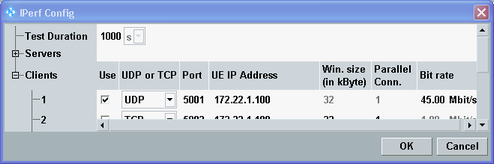
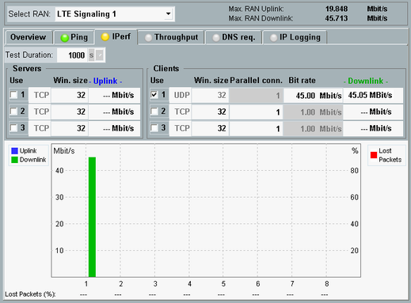

The following steps describe how to measure the downlink throughput for data transfer via UDP/IP. As a prerequisite, the iperf tool must be installed on the UE, or on a PC connected to the UE. A compatible program version can be downloaded from the web pages provided by the DAU. Refer to the DAU documentation for details.
Proceed as follows:
Select the "IPerf" tab.
Press "Config..." to open the configuration dialog.
In section "Servers", disable all entries (column "Use").
In section "Clients" configure the first entry:
Enable the entry.
Select "UDP".
Note the port. You need it in a later step.
Enter the IP address of the UE (see "Preparing the Tests").
Configure a bit rate compatible to the expected maximum downlink bit rate displayed at the top of the iperf view as "Max. Downlink".

Press OK to close the configuration dialog.
Press ON | OFF.
The application starts and the "Iperf" softkey indicates the "RUN" state.
The R&S CMW sends data packets to the UE, using the downlink bit rate indicated in the last column and the graphic.
Configure the iperf tool at UE side so that it listens to the UDP port configured for the used client entry.
Start the iperf tool at UE side. Compare the bit rates received at the UE with the sent bit rates at the R&S CMW.
